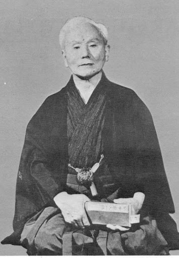
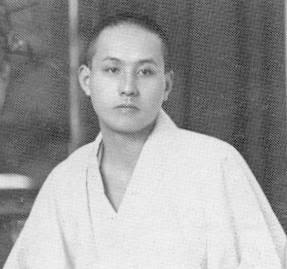
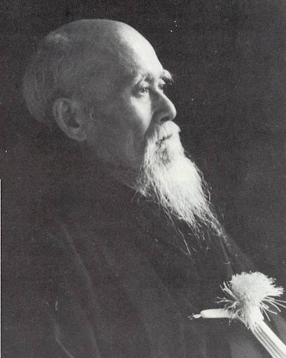
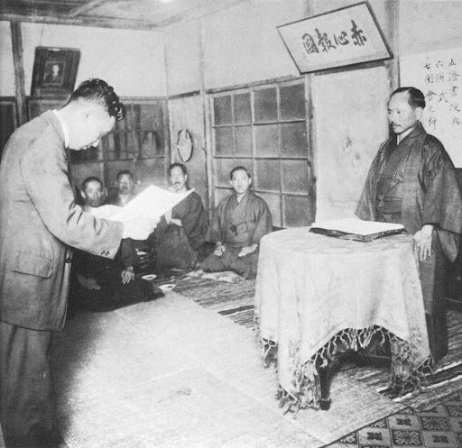
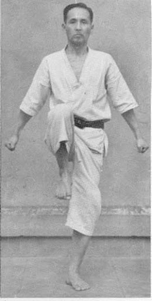
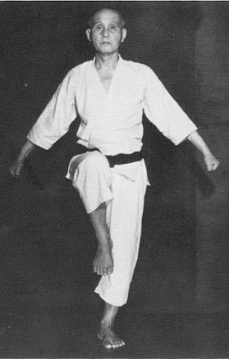
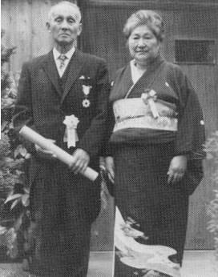
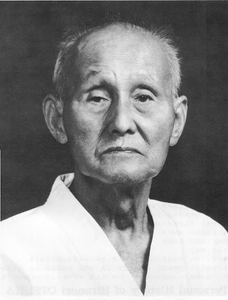
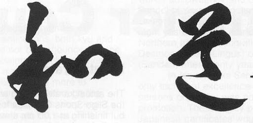

El Arte del karate, tal y como es practicado hoy día, procede directamente de la técnica del Okinawa-te.
Este método de auto-defensa, se ha visto muy influenciado por el arte chino del Kempo.
El fundador del Kempo fue el monje budista Bodhidharma, también conocido como Daruma Taishi. Era hindú, vivió en China en el monasterio Shaolin Szu. Allí enseñó a los monjes el budismo y empezó a instruirles con un método de disciplina física y mental.
Mas tarde se llamo Kempo, el allí practicado Shaolin-Szu-Kempo.
Okinawa es la mayor de las islas del archipiélago de las Ryukyu situadas al sur del Japón. A ella llegaron monjes y agregados chinos, otras veces era algún naufrago hábil en el Arte que enseñaba a determinados alumnos, el caso es que el Kempo llego a las Ryukyu, por eso recibe el nombre de To-De o mano de China, para diferenciarlo del arte propio de las islas se pasó a llamar Okinawa-Te.
Tampoco se tienen muchos datos sobre la evolución histórica del Karate de Okinawa, aunque se cuenta una leyenda muy interesante sobre su origen:
En el año 1406 el rey Sheo Hashi unificó las islas Ryu Kyu con la intención de formar un reino. Para garantizar un gobierno leal e impedir cualquier intento de sublevación de sus rivales militares,
confiscó todas las armas del reino e hizo de la posesión de armas un delito contra el estado.
En el 1609 Okinawa pasó a formar parte del territorio del clan Satsuma de la isla de Kyushu (al sur de Japón) y por segunda vez a sus habitantes se les confiscaron y prohibieron todo tipo de armas.
Se dice que, como consecuencia directa de esta prohibición de posesión de armas, evolucionó el arte de autodefensa con las manos vacías que fue llamado Okinawa-te o To-de. Se conocen mas datos sobre esta historia.
Así, en 1816 se informaba desde navíos británicos, de un pequeño y pacifico país donde las personas no poseen armas. Pero en realidad no habían entregado sus armas voluntariamente, sino que se las habían quitado.
La práctica y enseñanza permanecieron secretas hasta el año 1900, época en la que los maestros de Okinawa estimaron que los tiempos habían cambiado suficientemente como para poder romper el silencio.

El primer acontecimiento oficial donde se demostró el Okinawa-te o Ryukyu-Jitsu, fue organizado por el ministerio de cultura japonés, se llamó ”Dai Ikkai Taiiku Tenrakai”,
eso correspondería hoy a una organización deportiva especial. Jigoro Kano, fundador del Judo, y protector de Funakoshi fue quien tuvo la idea.
Ghichin Funakoshi, nació en 1868 en Shuri, alumno de Azato e Itosu, se le conoce como el padre del Karate moderno. Era el mas preparado para realizar una exhibición en la Primera Gala Gimnástica Nacional en Tokio por sus conocimientos del Karate,
del idioma y etiqueta japonesa. Esta fue la primera oportunidad (1922 en Tokio) de mostrar el Karate (Okinawa-te) a muchos budokas, que se mostraron muy impresionados. Hironori Ohtsuka no estaba presente pero escuchó por primera vez hablar de Funakoshi.
Un mes después entraron en contacto y comenzó a entrenar con él.
Ya antes de esta época Ohtsuka era maestro de Jiu Jitsu Kempo, éste Arte Marcial al igual que el Rukyu-Jitsu, estaban bastante influenciados por el Shaolin-Ken por este motivo fue posible que Ohtsuka se formara maestro de Karate en el plazo de un año.
La técnica de Ohtsuka impresionó mucho a Funakoshi que apenas podía creer que no hubiese entrenado Karate. Algunos años después ya se tenía la opinión que la Kata de Ohtsuka era la mejor de Japón, incluyendo la de Funakoshi.

Hironori Ohtsuka nació el 1 de Junio de 1892 en la ciudad de Shimodate en la prefectura de Ibaraki (Japón)
Fue el primer hijo de Tokujiro Ohtsuka, doctor de medicina. Debido a su frágil salud su padre decide que comience a entrenar Jiu Jitsu (1 de Abril de 1897) con Chojiro Ejashi tío de su madre,
para que mejorase su estado físico. Desde entonces, Ohstuka fue educado dentro del estilo Samurai.
En 1905 ingresó en la escuela media de Shimozuma, en donde estudió Shindo Yoshin Ryu Jiu Jitsu con Tatsusaburo Nakayama.
En 1910 ingresa en la Universidad de Waseda para estudiar comercio.

En 1917 comenzó a trabajar en el Banco Kawasaki. Esto no le impidió continuar sus estudios de los diferentes estilos de Jiu Jitsu, visitó diferentes dojos e intercambió conocimientos técnicos. En este tiempo conoció a Morihei Ueshiba ( fundador del Aikido) y llegaron a ser buenos amigos.
El 1 de Junio 1921 coincidiendo con su 29 cumpleaños es nombrado por su maestro Nakayama como su sucesor y se le concede su certificado de graduación.
En Junio de 1922 tiene lugar el primer festival de deportes en Tokio. Gichin Funakoshi fue invitado desde Okinawa para realizar una demostración de Karate. Funakoshi realizó el kata Kushanku. Siguiendo la demostración estaba Jigoro Kano (fundador del Judo)

que en este tiempo, estaba considerado como el mejor Artista Marcial de Japón. Invito a Funakoshi a que continuase en Tokio y realizase mas demostraciones. Ohtsuka no estuvo presente en esta exhibición, pero en Julio visito a
Funakoshi en el Meisei Juku (residencia para okinawenses en Japón) éste aceptó enseñarle todo lo que conocía sobre el karate, las clases comenzaron ese mismo día. Después de un año de aprendizaje, Ohtsuka había estudiado todas las
katas que Funakoshi había traído de Okinawa, pero encontró algunos movimientos difíciles de comprender.
Kano sensei sugirió a Funakoshi que el espíritu de Budo era defensa y ataque, que la práctica del kata sólo, no era suficiente. Ohtsuka mientras tanto ya había desarrollado algunos Yakusoku Kumite (técnicas de lucha predeterminadas) con un compañero.
En Mayo de 1924 Ohtsuka y Funakoshi realizaron una demostración en público de Yakusoku Kumite. Funakoshi fue reconocido como la primera persona en introducir el Ryukyu Karate Jitsu o estilo de Karate de Okinawa en Japón.
Tres años mas tarde muere la madre de Ohtsuka, éste deja su trabajo en el Banco Kawasaki y se dedica a la práctica de colocar huesos en un pequeño hospital, en eso era un experto por sus conocimientos de medicina y las articulaciones, experiencias adquiridas con los años
de práctica del Jiu Jitsu. Al mismo tiempo era jefe instructor de Sindo Yoshin Ryu y asistente de Funakoshi.
A comienzos de 1928 comenzaron a llegar a Japón otros maestros okinawenses. El primero y el de mayor influencia fue Kenwa Mabuni, otro maestro que llegó en esos tiempos fue Choki Motobu, con ambos también entrenó Ohtsuka.
En 1929 ya había establecido la mayoría de los movimientos del Karate Wado Ryu y se registró como un miembro de la Nippon Kobudo Shiko Kai (Federación Japonesa de Las Artes Marciales)

Funakoshi añadió el Do (camino) al Karate para que no se viera simplemente como Jitsu ( técnica) dándole el sentido del desarrollo personal y la vía a seguir. Cambió los nombres originales de los Katas
del chino el japonés, Ohtsuka prefirió mantener los nombres originales.
En Mayo de 1934 el Karate Wado Ryu fue reconocido como un estilo independiente. Ohtsuka cerró su hospital, y se dedicó por completo a las Artes Marciales.
En 1938 la Dai Nippon Butoku Kai otorgó a Ohtsuka la categoría de Renshi go (instructor de alto rango)

En 1939 la Dai Nippon Butoku Kai pidió a los diferentes estilos de Karate que se registrasen oficialmente,
Ohtsuka registro el nombre de Wado Ryu, otros estilos que se registraron fueron: Sotokan ryu, Gojo Ryu, Shito Ryu etc
En 1944 la Dai Nippon Budoku Kai, pidió a Ohtsuka que fuese el jefe instructor de Karate de Japón. Al terminar la Segunda Guerra Mundial (1945) la práctica de las artes
marciales fue prohibida hasta 1951, con la firma del tratado de paz entre Japón y América, la práctica de las Artes Marciales se reinstauró y el espíritu del Budo fue libre.
Esto no afectó al Karate pues lo consideraron como un deporte.
En 1964 tres instructores de la Nihon University vinieron a Europa y América para realizar una demostración de Karate Wado Ryu, eran Tatsuo Suzuki, Toru Arakawa y Hajime Takashima.

En este mismo año se fundo la Federación Japonesa de Karate.
En 1965 Tatsuo Suzuki, Teruo Kono, Yutaka Toyama, Atsuo Yamashita y Masafumi Shiomitsu comenzaron a enseñar Wado en Europa.
En 1966 le fue concedida la Kun Goto oukuo Kyokujujitsu Show por el emperador Hirohito por su dedicación, difusión y enseñanza del Karate.
En 1970 se fundó la Organización Mundial de Karate Do en el primer Campeonato Mundial de Karate Do que tuvo lugar en el Budokan de Tokio.
En el 1972 Higashi no Kuni no Miya (un miembro de la familia real) Presidente de la Kokusai Budo Renmei, (Federación Internacional de la Artes Marciales) concedió a Ohtsuka el titulo de Meijin,

el más alto grado que puede ser concedido. Fue el primer hombre en la historia en recibir este gran honor. En este mismo año Yasuharu Igarashi vino a España
y comenzó a enseñar Karate Wado, posteriormente llegaría Morilla Saito.
El 29 de Enero de 1982 Hironori Ohtsuka muere a la edad de 90 años, nunca dejo de practicar “Budo”, practicó las Artes Marciales durante 84 años.
Fue el primer japonés no okinawense que creó un estilo de Karate y el creador del Ju Kumite.

Wado Ryu se considera al estilo de Karate, (Ryu es puede traducir como escuela) y Wado Kai, (Kai se puede traducir como asociación) era la Organización que dirigía esta escuela de Karate. Unos meses antes de morir Ohtsuka pidió a Wado Kai dinero para construirse un dojo con la idea de que el dinero de Wado Kai era suyo, la directiva se lo negó, y a partir de entonces se separó de Wado Kai formándose dos grupos, Wado Ryu el grupo de Ohtsuka y Wado Kai el grupo de los dirigentes de Wado.
felix.herranz@wadokai.es
{kind=link}
{kind=link}
{kind=link}